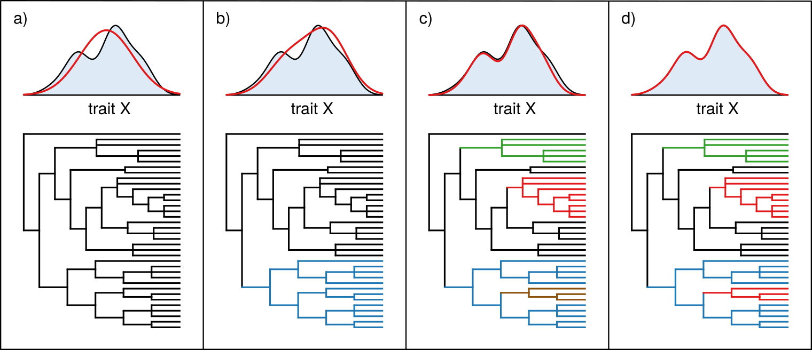

<div class="container">
<div class="d-flex flex-column justify-content-center">
    <div class="row justify-content-center" id="profile-col">
        <div class="col-sm-12 text-justify">
            <p class="gran"> 
		Phylogenetic comparative methods are crucial tools for the study of evolutionary biology. However, to date, it has not been fully explored the idea of using them to analyse the structure of ecological communities. In my work, I develop phylogenetic comparative methods to study species' interactions as phenotypic traits, revealing common evolutionary patterns on the structure of empirical ecological communities.
            </p>
        <br>
            
        </div>
    </div>
</div>
</div>

